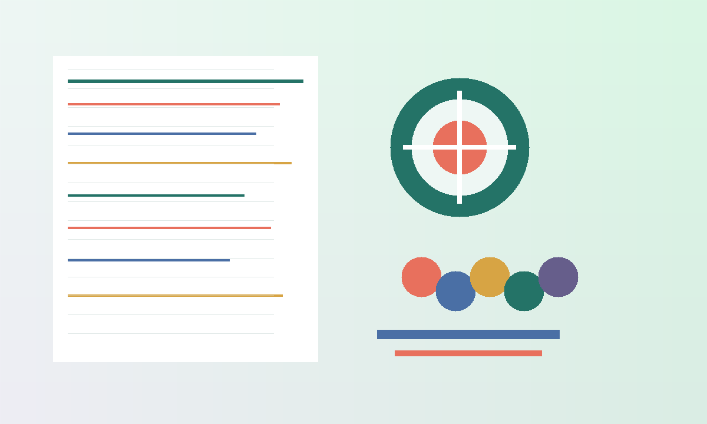

目标：复旦大学护理学院
护理综合专业课训练计划
从 2026-05-25 起按 30 周推进：先完成基础、内科、外科一轮，再做病例分析、选择题速度和整卷模拟。核心目标是把每个疾病按“病因/机制、表现、检查、治疗、护理、健康指导”形成可复述框架。

考试结构
300 分 / 3 小时
308 护理综合怎么拆分
当前节奏
本周训练重心
可执行
今天怎么学
本周目标
今日三段式
强度
按可用时间切换
路线图
0 / 30 周完成
30 周完整训练计划
大纲知识库
详细知识点
拿分动作
题型训练与病例模板
病例分析固定答题顺序
先判断最危险的问题，再写护理诊断和措施，避免只背书名词。
练习题
病例专项题
复盘
进度与错题本
掌握度
下次复盘清单
- 今天做错的题，必须标注“错因”：知识空白、审题、选项陷阱、时间不足。
- 病例题每次只改一个维度：诊断是否准、措施是否具体、优先级是否正确。
- 每周日只做两件事：重做错题、更新下周最薄弱的 3 个知识点。
依据
信息来源与使用说明
说明：网页里的训练计划是备考安排，不替代当年复旦大学研究生招生网、复旦护理学院和研招网最终发布的招生目录、考试大纲、考试时间与复试规则。2027 年入学考试的最终信息如有更新，需要按新公告调整。